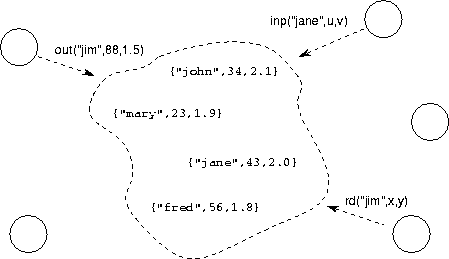
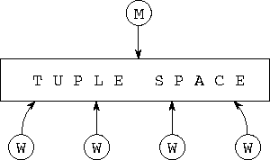
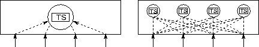

![[DBPP]](pictures//asm_color_tiny.gif)


![[Search]](pictures//search_motif.gif)
In the second case study, we illustrate how concurrent composition allows us to define reusable program components that support asynchronous operations on distributed sets. Various types of set can be defined, each distinguished by the particular operations that it supports. Here, we consider the example of the tuple space, which forms the basis for the Linda parallel programming language.
A tuple space is a collection of tuples ---terms with a key and zero or more arguments. Five operations are supported: insert ( out), blocking read ( rd), nonblocking read ( rdp), blocking read and delete ( in), and nonblocking read and delete ( inp). An element can be updated by first deleting it and then reinserting a modified version of it. The insert operation provides a key and values for a new tuple's arguments, while the read and the read/delete operations specify the key and arity (number of arguments) of the tuple that is to be retrieved. Duplicate tuples are supported, so the element retrieved by a read or delete operation is not necessarily uniquely determined by the key and arity provided. The predicate operations inp and outp are guaranteed to locate a matching tuple if and only if it can be shown that a matching tuple must have been added to tuple space before the request was generated and that this tuple could not have been removed before the request was processed. Figure 4.7 shows the tuple space in action.

Figure 4.7: A tuple space, here used to contain personnel data. Tasks
can generate asynchronous requests to read ( rd), remove (
inp), and add ( out) tuples.
The tuple space abstraction is a good candidate for encapsulation in a module. It is a useful structure with a well-defined interface and hence is both likely to be reused and easy to modularize. We may also wish to modify its implementation in order to optimize performance on different parallel computers. Hence, we define a tuple space module suitable for concurrent composition. This encapsulates the representation of the tuple space and provides an interface comprising an array of channels on which can be sent messages representing the various types of request.
We first illustrate the use of the tuple space module by showing how it can be used to implement a database search problem. We are given a file containing a set of search data, a target, and a routine that computes a numeric score for a single datum/target pair. We are required to identify the search datum that yields the highest score. This problem is prototypical of many database search problems. For example, the target may be a new genetic sequence and the database a collection of such sequences; in this case, a score is computed by a dynamic programming computation and reveals the degree to which two sequences are ``related.'' Alternatively, the target may be a description of a physical process and the database a collection of alternative parameter values; a score is then obtained by simulating the process using a set of parameter values.
A straightforward solution to this programming problem is to create a single manager and a large number of workers, with all tasks having access to a shared tuple space (Figure 4.8). The logic executed by the manager and workers is summarized in Program 4.2. The manager makes a series of out requests to place the search data in the tuple space and then performs in operations to retrieve the results generated by workers. When all results have been retrieved, it signals the workers to terminate by placing stop tuples into tuple space, a technique known as a ``poison pill.'' Each worker repeatedly removes a search datum from tuple space, compares it with the target, and puts the resulting score back in tuple space. Notice that this was essentially the technique used to parallelize the parameter study problem in Section 1.4.4. However, here we use a standard module (tuple space) in our solution---a good example of code reuse.

Figure 4.8: A database search program constructed by the concurrent
composition of a tuple space module, a manager task, and multiple
worker tasks.
Notice that, because an in request blocks until a corresponding out request is processed by the tuple space, the order in which requests are generated by the manager and workers does not affect the result computed. In particular, workers can ``run ahead'' of the manager, generating in requests for which there are not yet any matching tuples.

Figure 4.9: Two alternative implementation strategies for a tuple space
module. The structure on the left uses a central server, while the
structure on the right distributes the tuple space among multiple
tasks using a hash function. Both structures provide the same
interface, an array of channels.
A variety of implementation strategies can be pursued for the tuple space module (Figure 4.9). One simple, although nonscalable, approach is to encapsulate the tuple space in a single task that maintains a set of tuples and a set of pending rd requests. Both sets can be represented by using hash tables. A hash function is applied to the key supplied with an out, rd, etc., operation, and the value returned is used to identify the hash bucket in which the associated element is stored.
The hashing approach is easily adapted to obtain a scalable parallel implementation. The first few bits of the hash value are used to determine the processor on which an item is located; the rest of the hash value locates the item within that processor. This strategy has the desirable property that no tuple space operation requires more than two communications: one to forward the request to the task in which the relevant tuple is located, and one to return a result. It also has the important attributes of being both highly concurrent and well balanced: if requests are generated in a distributed fashion and the hash function yields a balanced mapping of keys to processors, then accesses can proceed concurrently on P processors.
© Copyright 1995 by Ian Foster